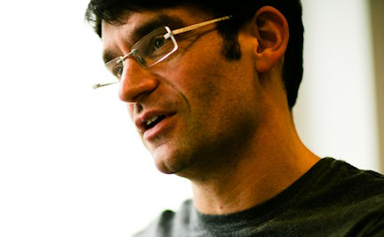

The lost art of efficiency in interaction design
Why was it worth one company spending $350,000 to shave a second off an interaction? Should you do the same?
Designing for the web has made interaction designers lazy.
Before the web, we had to care about making interactions efficient because they were for pinstriped businesses or high-pressure environments like aircraft cockpits.
The web changed the rules.
With the web, interfaces had to be easy for the millions of new users who were coming online. Meeting that challenge undoubtedly made interfaces better. But our designs no longer had to be efficient – people just had to think they were efficient.
For users, sitting home at their computers, it's hard to judge the passage of time. That means there's a big difference between perceived efficiency and actual efficiency. Little by little, we've lost our our ability to design for actual efficiency.
But perceived efficiency is no longer good enough. We need to create interfaces that people can glance at, use with a flick of the wrist or check a dozen times an hour.
In this talk, I'll explain why this matters. How improvements in interactions that are so small they're hard to measure can end up making a huge difference to user experience. I'll discuss how companies spend hundreds of thousands of dollars making interactions more efficient and why it pays off.
I'll look at what stops us designing for efficiency. In most cases efficiency is not even recognised as a design requirement. Often, designers mistakenly reject the most efficient designs. We user test our designs in ways that lead us to choose the least efficient iterations – ones that frustrate users in the real world. I'll give practical advice on how to change that.
I'll also investigate perceived efficiency. After all, for years we managed to fool users into thinking that the web was efficient. What were the tricks of the mind we relied on? What does the psychology of analysing conversations have to teach us? And what design patterns have we become used to pushing at users that are holding us back from more inventive, efficient solutions?
Of course efficiency on it's own isn't enough. In fact, as I'll show, it can be terrible. Interactions also need to be usable and satisfying. I'll discuss how to find the right balance.
I'll distill all that down into some techniques and rules the audience can apply immediately to measure and improve their designs.
Along the way, I'll offer plenty of examples, and a few surprises.
Giles Colborne
About Giles: Giles’ book ‘Simple and usable web mobile and interaction design’ published by New Riders is a best-seller in the US, UK and China. He has been working in usability and user centred design since 1991 and is actively involved in the community - most recently as co-chair of IA Summit 2013.
He founded cxpartners with Richard Caddick in 2004, which has grown to become an international consultancy which works with companies all over the world to create web and mobile user experiences that make a measurable difference to their bottom line and their customers’ lives.
Giles is a former President of the UK Usability Professionals’ Association and has worked with British Standards Institute in developing guidance on web accessibility.